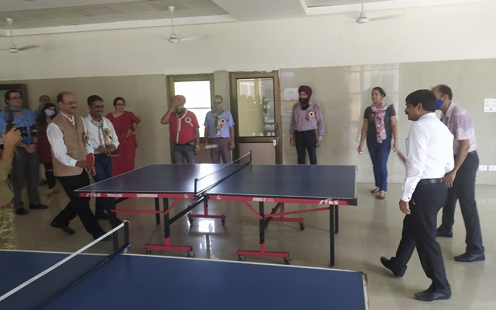

Campus Journey
Departments
Computer Science and Engg.
Located in Jalandhar district of Punjab, NIT Jalandhar enjoys a really scenic environment and pleasant weather. Established in the year 1987, as REC Jalandhar, NIT Jalandhar has been declared as the Institute of National Importance under the Act of Parliament, 2007. Established in 1990 as the Department of Computer Science & Engineering, we have an excellent & rich history and an outstanding record of contributions to the profession and community. The Department is well recognized for excellence in facilities and teaching.
Visit : Computer Science & Engineering
Information Technology
Located in Jalandhar district of Punjab, NIT Jalandhar enjoys a really scenic environment and pleasant weather. Established in the year 1987, as REC Jalandhar, NIT Jalandhar has been declared as the Institute of National Importance under the Act of Parliament, 2007. Established in 1990 as the Department of Information Technology, we have an excellent & rich history and an outstanding record of contributions to the profession and community. The Department is well recognized for excellence in facilities and teaching.
Visit : Information Technology
Mechanical Engineering
It is my prerogative and privilege to introduce Department of Mechanical Engineering at the Dr B R Ambedkar NIT Jalandhar. Mechanical engineering works on the principles and analysis to ensure the safety as well as development of human life. Mechanical engineers make a difference because virtually every product or service in modern life has probably been touched in some way by a mechanical engineer to help humankind.
Visit : Mechanical Engineering
Our Clubs
Prayaas
Art Club
Yoga Club
Facilities

Guest House

24-Hours Bus Service

Indoor Activities
Canteen
Banks
Open Air Theater
Central Seminar Hall
Student Activities Centre